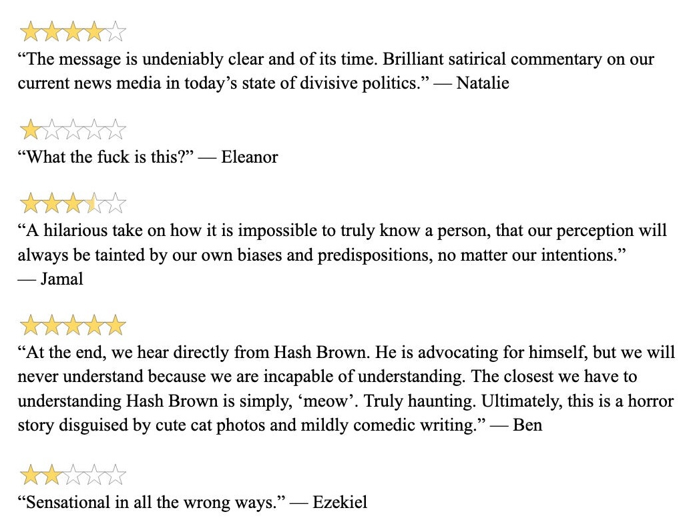

Who is Hash Brown (née Brown) the cat? Why does he do all the weird-ass things he does?
In the desperate search for answers, six searing, gripping narratives unfold, ultimately revealing more about our shared humanity than anything true about Hash Brown (née Brown) the cat.
Through this intricately made zine, Julia and Anna ask: what does it mean to know another?
Full zine here on Anna's Substack, contact me for a free physical copy!
Praise for The Many Windows Into Hash Brown's Life
